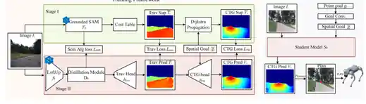
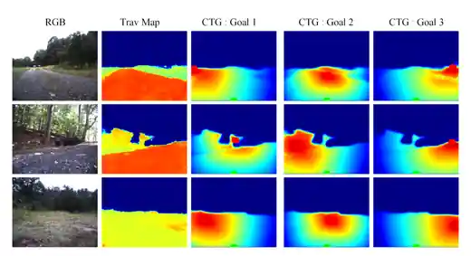

Visual navigation from monocular RGB observations remains challenging due to the need for reliable scene understanding and safe decision-making in diverse real-world environments. Existing modular approaches often depend on additional sensing or interaction-heavy pipelines for reliable traversability estimation, while end-to-end methods typically infer navigation-relevant structure indirectly through trajectory-centric supervision. Motivated by these observations, we propose Value-Guided Navigation (VGN), an RGB-based framework for learning dense traversability-aware and goal-conditioned planning representations for downstream navigation. To achieve this, we leverage vision foundation models together with classical planning algorithms to generate dense traversability and cost-to-go pseudo-labels directly from static RGB images. This supervision is generated without trajectory supervision or robot interaction and is used to train the student planning representation model. The learned representation is planner-agnostic and can be integrated with multiple downstream planning mechanisms. Experiments across multiple outdoor datasets, closed-loop simulation environments, and real-world deployment on a Unitree Go2 robot demonstrate effective RGB-based traversability estimation and local motion planning.
Visual navigation offers a compelling alternative to sensing-heavy navigation stacks because visual observations can support both scene understanding and local planning. However, existing modular systems often require robot interaction, temporal aggregation, or additional sensing to learn reliable traversability, while end-to-end approaches commonly learn navigation structure indirectly from demonstrations, reinforcement learning, or trajectory optimization. VGN asks whether navigation-oriented planning structure can instead be learned explicitly from static RGB imagery, while retaining the structured reasoning of modular planning and the reactive behavior of learned navigation. We use goal-conditioned cost-to-go as this intermediate representation, providing dense goal-directed planning structure without directly predicting actions or trajectories.

A teacher pipeline grounds semantic regions in the input image, converts these regions into a dense traversability map, samples a projected goal, and computes a traversability-aware CTG field using classical planning. A student network then learns to predict both traversability and goal-conditioned CTG from RGB. At test time, the same representation can support graph search, direct CTG-gradient rollout, or gradient-guided sampling.
The traversability map remains fixed while different goal locations induce different dense CTG fields, illustrating adaptive goal-aware planning.

We train on RUGD and evaluate zero-shot on RELLIS, GOOSE, NaviTrace, and Cityscapes. The teacher generates dense traversability and CTG supervision from static RGB images, allowing the student to learn goal-conditioned navigation structure without expert trajectories. We also evaluate closed-loop navigation in Forest and City simulation environments and deploy the learned system on a Unitree Go2 for real-world testing.
Training on RUGD transfers to multiple unseen outdoor and urban datasets.
| Train → Test | Trav. MAE ↓ | IoU@0.5 ↑ | CTG Corr. ↑ |
|---|---|---|---|
| RUGD → RUGD | 0.037 | 0.933 | 0.952 |
| RUGD → RELLIS | 0.060 | 0.880 | 0.968 |
| RUGD → GOOSE | 0.073 | 0.816 | 0.864 |
| RUGD → NaviTrace | 0.098 | 0.764 | 0.775 |
| RUGD → Cityscapes | 0.050 | 0.915 | 0.920 |
| Method | Forest Success ↑ | Forest SPL ↑ | City Success ↑ | City SPL ↑ |
|---|---|---|---|---|
| iPlanner | 64% | 0.639 | 65% | 0.649 |
| ViPlanner | 55% | 0.546 | 70% | 0.699 |
| POVNav | 55% | 0.465 | 21% | 0.173 |
| VGN (graph search) | 80% | 0.682 | 68% | 0.659 |
| VGN (direct gradient) | 68% | 0.853 | 71% | 0.957 |
| VGN (gradient sampling) | 65% | 0.924 | 68% | 0.989 |
The final page uses high-resolution videos arranged two per row, so each environment can be inspected directly instead of only through the full project video.
@inproceedings{anonymous2027vgn,
author = {Anonymous Authors},
title = {VGN: Value-Guided Navigation from RGB for Robot Motion Planning},
booktitle = {International Conference on Learning Representations},
year = {2027},
}